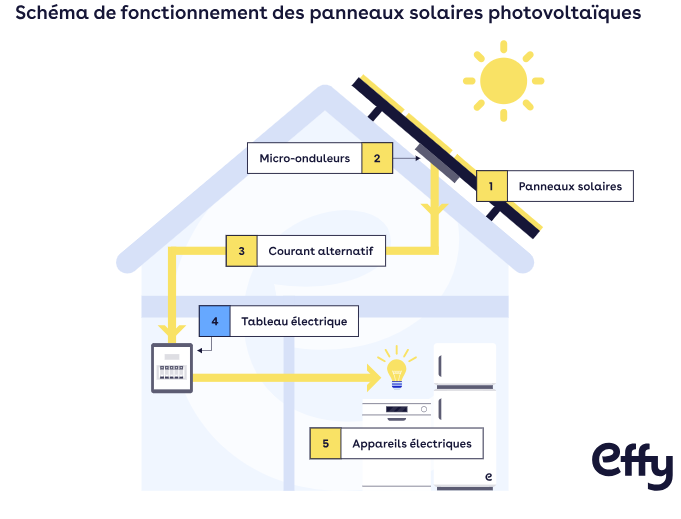

01
Géométrie
L’influence de l’inclinaison
Étudier l’influence de l’orientation de la cellule sur l’éclairement reçu et la tension produite.
Accéder à l’expérience →Optimisation des paramètres de fonctionnement d’une cellule photovoltaïque.
« Quels sont les facteurs permettant à une cellule photovoltaïque de produire son rendement maximal ? »
Observer · Mesurer · Interpréter
Une cellule photovoltaïque transforme l’énergie lumineuse en énergie
électrique.
Lorsque la lumière frappe la surface d’un panneau solaire,
les cellules photovoltaïques réagissent en libérant des électrons : un courant électrique continu se crée.
Le courant continu n’est pas utilisable en l’état.
C’est pourquoi un onduleur transforme le courant continu en courant alternatif.
Les performances d’une cellule dépendent de plusieurs paramètres
physiques. SRC : "Dual Sun"
À travers deux expériences, nous cherchons à comprendre
comment l’inclinaison et la longueur d’onde de la
lumière influencent sa production électrique.

Comment avons-nous réalisé ce site web :
Nous avons tout d’abord créé une base à l’aide de l’IA Claude, notamment pour mettre en place la structure du projet ainsi que les éléments CSS et JavaScript.
Nous avons ensuite créé et organisé les différents blocs de la page
grâce aux classes (class) et aux différentes sections
(section).
Le contenu, les textes et les expériences présentés ont, quant à eux, été réalisés par nous-mêmes.
Nous avons utilisé l’IA comme un outil d’aide et d’accompagnement, et non comme un moyen de réaliser entièrement le projet à notre place.
Les deux expériences
Géométrie
Étudier l’influence de l’orientation de la cellule sur l’éclairement reçu et la tension produite.
Accéder à l’expérience →Optique
Comparer la réponse électrique de la cellule selon la couleur et la longueur d’onde de la lumière reçue.
Accéder à l’expérience →
EDF
Guidemoe.fr
TerreSolaire
Voltaic Systems
LibTestChamber.com
Limite de Shockley-Queisser (Wikipédia)
EFFY
TucoEnergie
TotalEnergies